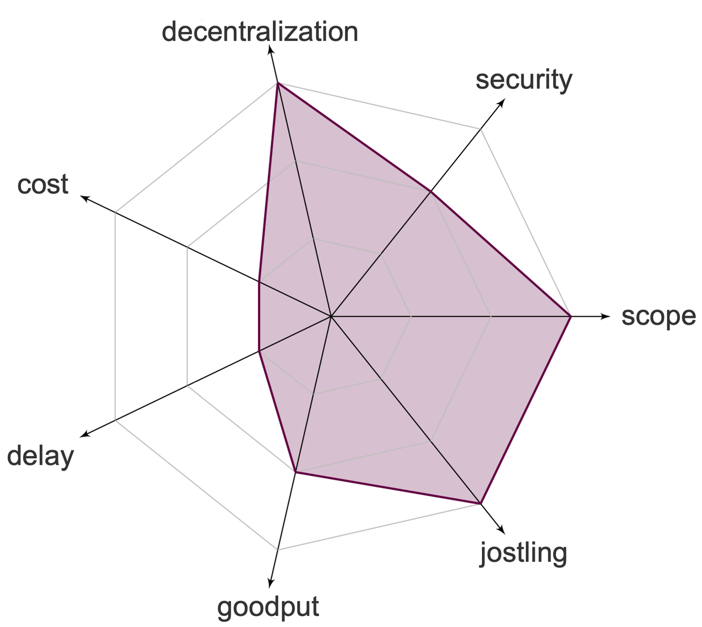

Positives

- No impact on decentralization
- Good Scope
- Minimal Jostling

Negatives

- Increased Transaction fees
- Increased Delay
- Decreased Goodput
The on-chain commit & reveal approaches order transactions in two phases. In the first phase, users commit to their transactions by broadcasting their encrypted transaction which is included on-chain. In the second phase, after some time the transaction is either decrypted automatically once the private key becomes available or by the users themselves.
This page is mantained by the Distributed Computing group at ETH Zürich. We are not liable for any false information.
Copyright © 2024 Distributed Computing Group, ETH Zürich